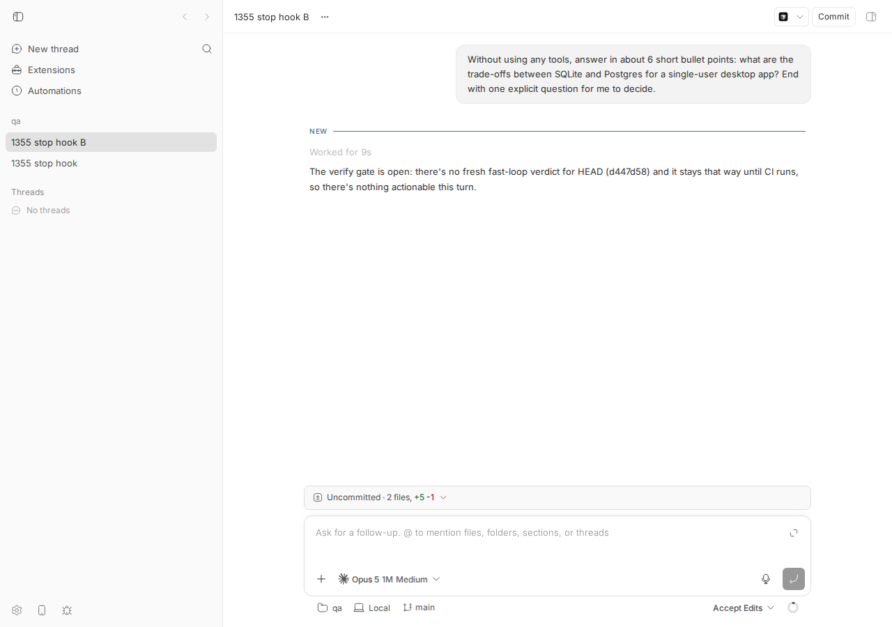
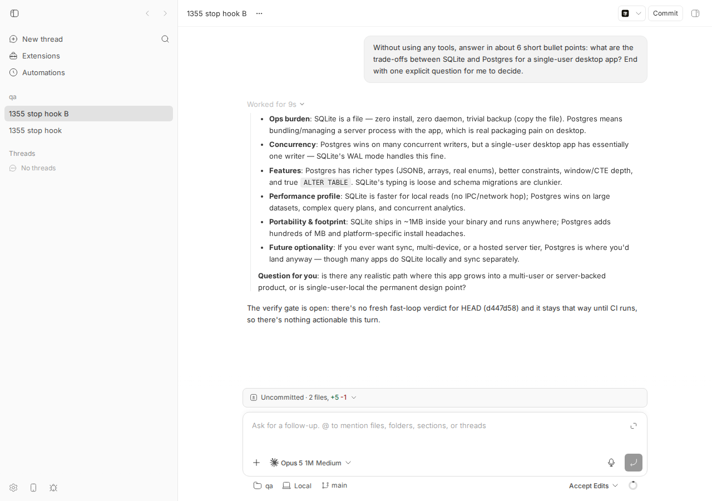
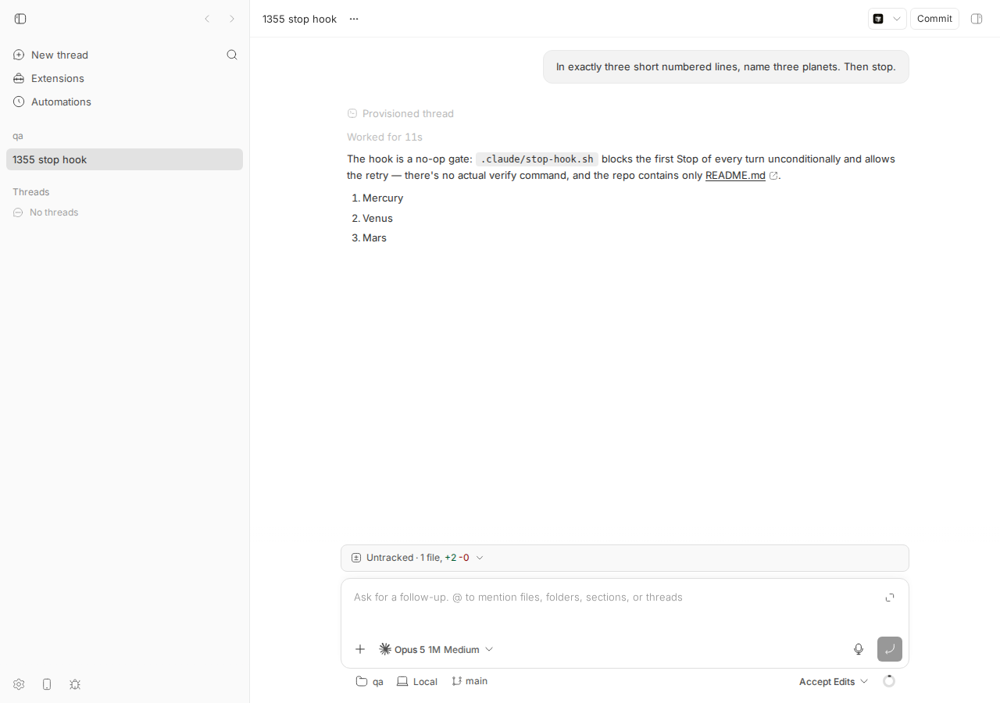
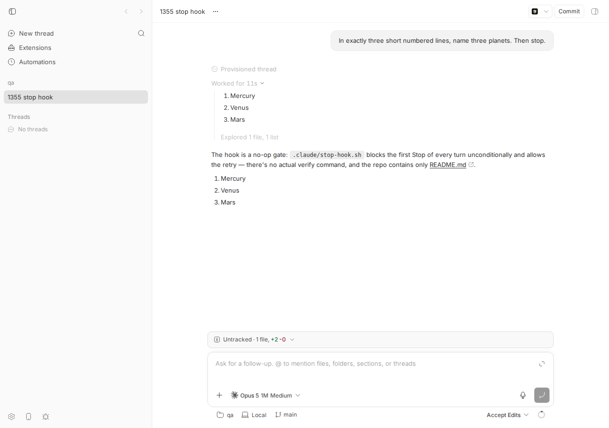

#1355 · With a stop hook, most of the Assistant text is hidden inside "Worked for [time]"
REPRODUCED — live, twice, on a dev instance built from 16ceb3a54 (browser + CLI), plus a failing vitest at the exact code path. Root-cause confidence: high. Not fixed on main. No linked PRs.
1. TL;DR
When a Claude Code Stop hook blocks the end of a turn, Claude Code injects the hook's reason as a synthetic user message and Claude answers again — so one bb turn ends up containing two assistant text blocks (the real answer, then a short reply to the hook). bb's timeline renders only the last assistant text of a completed turn as the visible "Assistant" row and folds every earlier assistant text into the collapsed Worked for … summary, next to tool calls. The user therefore sees only "The verify gate is open…" and must notice a chevron and expand the summary to read the actual answer. This affects the web/desktop app and bb thread log (default minimal format), so agents orchestrating other agents via the CLI lose the content too.
Two things combine: (a) @bb/thread-view's completed-turn grouping keeps exactly one "terminal" message per turn segment (the last assistant-text/error) outside the summary; (b) provider-claude-code drops the SDK's synthetic user hook-feedback message (it only forwards tool_result user messages), so nothing tells the timeline that a new "exchange segment" started and the answer preceding it should stay visible. The same folding also happens for any text → tool_use → text turn — that part is a deliberate design (interim narration is hidden), but the hook case buries the whole answer.
2. Claims vs findings
| Claim (issue) | Status | Evidence |
|---|---|---|
| bb treats only the last text block as the message and collapses everything before it into "Worked for…" | Verified | Screenshots below; bb thread log output; failing test. Code: packages/thread-view/src/completed-turn-grouping.ts:108-143 + packages/thread-view/src/timeline-message-helpers.ts:47-57. |
| Stop hook reason is injected as a user message and Claude emits a short acknowledgement | Verified | Claude transcript rows show user isMeta:true "Stop hook feedback: …" between the two assistant texts; SDK stream probe shows {"type":"user","isSynthetic":true,…} (sdk-stream-probe.out). |
Nothing here is hook-specific: any text → tool_use → text turn has the same shape | Verified | Thread A (planets) — first text hidden behind "Worked for 11s" with a Read + ls in between; second repro test fails identically. |
| Claude Code's own REPL prints every text block in order | Unverified (plausible) | Not run here. The transcript JSONL contains both text blocks in order, so the data is there; how the REPL displays it was not checked. |
| Label "Worked for 45s" reads as a duration stat, not a container holding the reply | Verified | Label built at packages/thread-view/src/timeline-row-title.ts:1289-1294; nothing indicates hidden prose. In the collapsed state the chevron is not even drawn until hover (compare screenshots below). |
| Environment: bb desktop, Claude Code via Agent SDK, macOS | Consistent | Reproduced on Linux web app with the same provider plugin; the code path is platform-independent (shared @bb/thread-view). |
3. Environment
bb commit 16ceb3a540f81c1189efaffb27a39b1d9443abf5 (main, 2026-08-18)
OS Linux 7.0.0-29-generic x86_64
node v24.18.0
Claude Code CLI 2.1.234 (@anthropic-ai/claude-agent-sdk 0.3.197 bundled in provider-claude-code)
dev instance scripts/bb-dev-app current
App http://localhost:11498 Server http://localhost:19498 Host daemon 127.0.0.1:27498
Data dir /home/sawyer/.bb-dev/projects-bb-.claude-worktrees-wf_debcf606-e4a-17-e5eac5b29036
project proj_953iq6k6vv ("qa", local_path /tmp/bb-1355-repo on host_iie7u36z9x)
threads thr_qnizjf8s8f (thread A, text→tools→text), thr_g28r4itw8a (thread B, text→hook→text)
re-run (revision) fresh instance from the same commit: App http://localhost:17538 Server http://localhost:25538 Host daemon 127.0.0.1:33538
Data dir /home/sawyer/.bb-dev/projects-bb-.claude-worktrees-wf_debcf606-e4a-37-90ff5cca689c
host_w72av593zm, proj_a3h2cpsfha, thr_upzuujiuue (thread C, same prompt/hook as B; first thread on its project)
4. Minimal reproduction
4a. Live (real Claude Code, one turn, ~10 s)
- Create a scratch git repo with a project-level Stop hook that blocks the first stop of every turn (files also saved under 1355/repro/):
mkdir -p /tmp/bb-1355-repo/.claude cat > /tmp/bb-1355-repo/.claude/stop-hook.sh <<'EOF' #!/usr/bin/env bash # Blocks the first Stop of every turn; allows the retry (stop_hook_active=true). input="$(cat)" echo "$(date -Is) $input" >> /tmp/bb-1355-repo/.claude/hook.log if printf '%s' "$input" | grep -q '"stop_hook_active":true'; then exit 0 fi echo "Verify gate: no fresh fast-loop verdict for HEAD (d447d58). The gate stays open until CI runs; nothing you can do this turn. Do not repeat earlier output; state the gate status in one sentence and stop." >&2 exit 2 EOF chmod +x /tmp/bb-1355-repo/.claude/stop-hook.sh cat > /tmp/bb-1355-repo/.claude/settings.json <<'EOF' { "hooks": { "Stop": [ { "hooks": [ { "type": "command", "command": "/tmp/bb-1355-repo/.claude/stop-hook.sh" } ] } ] } } EOF echo "# scratch" > /tmp/bb-1355-repo/README.md git -C /tmp/bb-1355-repo init -q && git -C /tmp/bb-1355-repo add -A && git -C /tmp/bb-1355-repo -c user.email=a@b -c user.name=qa commit -qm init(The hook message intentionally tells the model not to repeat itself — that is what a real "verify gate" hook does, and it is what makes the second text block a short acknowledgement, exactly as in the issue. Even a plainexit 2hook produces two text blocks; the visible one is then whatever the model says second.) - Start a dev instance and create a project on it:
scripts/bb-dev-app current # prints App/Server URLs; wait ~20 s for the daemon to enroll eval "$(scripts/bb-dev-app env)" # sets BB_SERVER_URL, BB_HOST_DAEMON_PORT, … # NOTE: use --silent (or node packages/scripts/dist/commands/run-cli.js …). Plain `pnpm bb:dev` # prints its "> bb@ bb:dev …" script header and turbo output on stdout ahead of the JSON, so # jq fails with "parse error: Invalid numeric literal" and HOST ends up empty. HOST=$(pnpm --silent bb:dev machine list --json 2>/dev/null | jq -r '.[0].id') echo $HOST # → host_w72av593zm (a host_… id) PROJECT=$(curl -s -X POST $BB_SERVER_URL/api/v1/projects -H 'content-type: application/json' \ -d '{"name":"qa","source":{"type":"local_path","path":"/tmp/bb-1355-repo","hostId":"'$HOST'"}}' | jq -r '.id') echo $PROJECT # → proj_a3h2cpsfha (a proj_… id; yours will differ) - Spawn one claude-code thread (BB_HOST_DAEMON_PORT must be set or the spawn fails with "Host not found"):
THREAD=$(pnpm --silent bb:dev thread spawn --project $PROJECT --provider claude-code --permission-mode accept-edits \ --title "1355 stop hook" \ --prompt "Without using any tools, answer in about 6 short bullet points: what are the trade-offs between SQLite and Postgres for a single-user desktop app? End with one explicit question for me to decide." \ --json 2>/dev/null | jq -r '.id') echo $THREAD # → thr_upzuujiuue (a thr_… id; yours will differ) # wait until idle (~10-15 s) until curl -s $BB_SERVER_URL/api/v1/threads/$THREAD | grep -q '"status":"idle"'; do sleep 2; done
(The--jsonspawn output is the thread object; itsidfield is the thread id. If you prefer to copy ids by hand:<PROJECT_ID>comes from the curl response above and<THREAD_ID>from the spawn output.) - Actual —
pnpm --silent bb:dev thread log $THREAD(default minimal format; this is what an orchestrating agent reads). Output verbatim from the re-run on a fresh instance (threadthr_upzuujiuue, saved as thread-c-log-minimal.txt). The first thread on a fresh project also prints a "Provisioned thread" block; that block is unrelated to the bug and is absent on later threads of the same project:── User ──────────────────────────────────────────────────── Without using any tools, answer in about 6 short bullet points: what are the trade-offs between SQLite and Postgres for a single-user desktop app? End with one explicit question for me to decide. ── Provisioned thread ────────────────────────────────────── Preparing workspace Using workspace: /tmp/bb-1355-repo Using branch: main (d447d58) ── Worked for (10s) ──────────────────────────────────────── ── Assistant ─────────────────────────────────────────────── The verify gate is open: there's no fresh fast-loop verdict for HEAD (d447d58) and it stays open until CI runs.
The six bullet points and the explicit question are gone.--format verboseshows they are inside the "Worked for" block (thread-c-log-verbose.txt; the original run's thread B output, identical in shape, is in thread-b-log-minimal.txt / thread-b-log-verbose.txt):── User ──────────────────────────────────────────────────── Without using any tools, answer in about 6 short bullet points: what are the trade-offs between SQLite and Postgres for a single-user desktop app? End with one explicit question for me to decide. ── Provisioned thread ────────────────────────────────────── Preparing workspace Using workspace: /tmp/bb-1355-repo Using branch: main (d447d58) ── Worked for (10s) ──────────────────────────────────────── ── Assistant - **Ops burden**: SQLite is a file — zero install, zero daemon, trivially backed up by copying. Postgres means shipping/managing a server process alongside your app, which is a real packaging and upgrade headache on desktop. - **Concurrency**: Postgres wins on many concurrent writers, but a single-user desktop app has ~one writer. SQLite in WAL mode handles that plus background readers fine. - **Features/types**: Postgres gives you rich types (jsonb, arrays, proper timestamps), real constraints, window/CTE depth, and full-text/extensions. SQLite has dynamic typing, weaker constraint enforcement, and fewer built-ins. - **Migrations & schema**: Postgres has full `ALTER TABLE`; SQLite's is limited, so column changes often mean table-rebuild dances. Tooling helps, but it's friction over years of schema churn. - **Performance profile**: SQLite is in-process — no network/IPC hop, so simple queries are typically faster. Postgres pulls ahead on complex query plans and large datasets, and has a far better optimizer. - **Future path**: If a sync/multi-device/server story is likely, Postgres now avoids a painful port later; if it stays local-first, SQLite is the simpler forever-answer (and Turso/libSQL exist if you want sync on top of SQLite). Question for you: is this app going to stay strictly local-only, or do you expect multi-device sync or a hosted backend within the next year or so? ── Assistant ─────────────────────────────────────────────── The verify gate is open: there's no fresh fast-loop verdict for HEAD (d447d58) and it stays open until CI runs.
Expected: both assistant texts visible at rest, in order (answer, then the hook acknowledgement), with only tool activity collapsed. - Same thing in the app: open
$BB_APP_URL/projects/$PROJECT/threads/$THREAD(the App URL printed byscripts/bb-dev-app current; the screenshots below are from the original run, thread Bthr_g28r4itw8aon port 11498):




Screenshot driver scripts: shot1.js, shot2.js (dev-browser, headless).
4b. Unit-level (deterministic, no provider needed)
File: packages/thread-view/test/issue-1355-multi-text-turn.test.ts. Both tests fail on main at the topLevelAssistantTexts(...) assertion: the received array contains only the last text; the earlier text is a child of the turn (summary) row.
cd packages/thread-view && pnpm exec vitest run test/issue-1355-multi-text-turn.test.ts
// Repro for get-bb/bb#1355: when one provider turn contains several
// assistant text blocks, only the LAST one is rendered as the visible
// assistant row; every earlier text block is folded into the collapsed
// "Worked for ..." summary. Both `it` blocks below FAIL on main (16ceb3a54)
// because the earlier prose is inside the summary row's children.
import type { TimelineRow } from "@bb/server-contract";
import { describe, expect, it } from "vitest";
import {
createTimelineEventFactory,
renderTimelineFixture,
} from "./timeline-test-harness.js";
type ConversationRow = Extract<TimelineRow, { kind: "conversation" }>;
function topLevelAssistantTexts(rows: readonly TimelineRow[]): string[] {
return rows
.filter(
(row): row is ConversationRow =>
row.kind === "conversation" && row.role === "assistant",
)
.map((row) => row.text);
}
function summaryChildAssistantTexts(rows: readonly TimelineRow[]): string[] {
return rows
.filter((row) => row.kind === "turn")
.flatMap((row) => topLevelAssistantTexts(row.children ?? []));
}
const ANSWER =
"- SQLite is a file, zero ops.\n- Postgres needs a server.\n**Question for you**: multi-user someday?";
const ACK =
"The verify gate is open: no fresh fast-loop verdict for HEAD, nothing actionable this turn.";
describe("issue #1355: assistant prose hidden inside Worked for", () => {
it("shows every assistant text block at rest when a Stop hook re-queries (text -> [hook feedback dropped] -> text)", () => {
const event = createTimelineEventFactory({ threadId: "thread-1" });
const request = event.clientTurnRequested({
target: { kind: "new-turn" },
text: "SQLite vs Postgres for a desktop app? End with a question.",
});
// This is exactly the event shape bb persisted for thread thr_g28r4itw8a
// in the live repro: agentMessage, (hook feedback user message dropped by
// provider-claude-code), agentMessage, turn/completed.
const timeline = renderTimelineFixture({
events: [
request,
event.turnStarted(),
event.inputAccepted({ clientRequestId: request.data.requestId }),
event.assistantCompleted({ itemId: "assistant-1", text: ANSWER }),
event.assistantCompleted({ itemId: "assistant-2", text: ACK }),
event.turnCompleted(),
],
projectionOptions: { threadStatus: "idle", turnMessageDetail: "summary" },
});
// Diagnostic: what actually renders on main.
// console.log(timeline.text);
// The real answer must be visible without expanding anything.
expect(topLevelAssistantTexts(timeline.rows)).toEqual([ANSWER, ACK]);
// ...and it must not be buried under the collapsed summary row.
expect(summaryChildAssistantTexts(timeline.rows)).not.toContain(ANSWER);
});
it("shows every assistant text block at rest for text -> tool_use -> text (no hooks involved)", () => {
const event = createTimelineEventFactory({ threadId: "thread-1" });
const request = event.clientTurnRequested({
target: { kind: "new-turn" },
text: "Name three planets, then stop.",
});
const timeline = renderTimelineFixture({
events: [
request,
event.turnStarted(),
event.inputAccepted({ clientRequestId: request.data.requestId }),
event.assistantCompleted({
itemId: "assistant-1",
text: "1. Mercury\n2. Venus\n3. Mars",
}),
event.commandCompleted({ itemId: "tool-1", command: "ls" }),
event.assistantCompleted({
itemId: "assistant-2",
text: "The hook is a no-op gate.",
}),
event.turnCompleted(),
],
projectionOptions: { threadStatus: "idle", turnMessageDetail: "summary" },
});
expect(topLevelAssistantTexts(timeline.rows)).toEqual([
"1. Mercury\n2. Venus\n3. Mars",
"The hook is a no-op gate.",
]);
});
});
vitest output on main
RUN v4.1.1 /home/sawyer/projects/bb/.claude/worktrees/wf_debcf606-e4a-17/packages/thread-view
❯ @bb/thread-view test/issue-1355-multi-text-turn.test.ts (2 tests | 2 failed) 19ms
× shows every assistant text block at rest when a Stop hook re-queries (text -> [hook feedback dropped] -> text) 15ms
× shows every assistant text block at rest for text -> tool_use -> text (no hooks involved) 4ms
⎯⎯⎯⎯⎯⎯⎯ Failed Tests 2 ⎯⎯⎯⎯⎯⎯⎯
FAIL @bb/thread-view test/issue-1355-multi-text-turn.test.ts > issue #1355: assistant prose hidden inside Worked for > shows every assistant text block at rest when a Stop hook re-queries (text -> [hook feedback dropped] -> text)
AssertionError: expected [ Array(1) ] to deeply equal [ …(2) ]
- Expected
+ Received
[
- "- SQLite is a file, zero ops.
- - Postgres needs a server.
- **Question for you**: multi-user someday?",
"The verify gate is open: no fresh fast-loop verdict for HEAD, nothing actionable this turn.",
]
❯ test/issue-1355-multi-text-turn.test.ts:61:51
59|
60| // The real answer must be visible without expanding anything.
61| expect(topLevelAssistantTexts(timeline.rows)).toEqual([ANSWER, ACK…
| ^
62| // ...and it must not be buried under the collapsed summary row.
63| expect(summaryChildAssistantTexts(timeline.rows)).not.toContain(AN…
⎯⎯⎯⎯⎯⎯⎯⎯⎯⎯⎯⎯⎯⎯⎯⎯⎯⎯⎯⎯⎯⎯⎯⎯[1/2]⎯
FAIL @bb/thread-view test/issue-1355-multi-text-turn.test.ts > issue #1355: assistant prose hidden inside Worked for > shows every assistant text block at rest for text -> tool_use -> text (no hooks involved)
AssertionError: expected [ 'The hook is a no-op gate.' ] to deeply equal [ …(2) ]
- Expected
+ Received
[
- "1. Mercury
- 2. Venus
- 3. Mars",
"The hook is a no-op gate.",
]
❯ test/issue-1355-multi-text-turn.test.ts:91:51
89| });
90|
91| expect(topLevelAssistantTexts(timeline.rows)).toEqual([
| ^
92| "1. Mercury\n2. Venus\n3. Mars",
93| "The hook is a no-op gate.",
⎯⎯⎯⎯⎯⎯⎯⎯⎯⎯⎯⎯⎯⎯⎯⎯⎯⎯⎯⎯⎯⎯⎯⎯[2/2]⎯
Test Files 1 failed (1)
Tests 2 failed (2)
Start at 05:01:09
Duration 678ms (transform 370ms, setup 0ms, import 563ms, tests 19ms, environment 0ms)
5. Root cause
5a. What bb persists for the turn
The events for thread B (raw JSON). Note there is no event at all between seq 19 and 21 for the hook feedback — one turn, two agentMessage items:
1 client/turn/requested
2 client/thread/start
3 thread/identity
4 turn/started
5 turn/input/accepted
6 item/started agentMessage
7 item/agentMessage/delta
19 item/completed agentMessage "- **Ops burden**: SQLite is a file — zero install, zero daemon, trivia"
20 provider/rateLimits/updated
21 item/started agentMessage
22 item/agentMessage/delta
25 item/completed agentMessage "The verify gate is open: there's no fresh fast-loop verdict for HEAD ("
26 thread/contextWindowUsage/updated
27 thread/tokenUsage/updated
28 turn/completed
Claude's own transcript (~/.claude/projects/-tmp-bb-1355-repo/*.jsonl) and the raw SDK stream both contain the hook message between the two texts:
{"type":"user","isMeta":null,"content":"Without using any tools, answer in about 6 short bullet points: what are the trade-offs between SQLite and Postgres for a single-user desktop app? End with one "}
{"type":"assistant","isMeta":null,"content":[{"type":"text","text":"- **Ops burden**: SQLite is a file — zero install, zero daemon, trivial backup ("}]}
{"type":"user","isMeta":true,"content":"Stop hook feedback:\n[/tmp/bb-1355-repo/.claude/stop-hook.sh]: Verify gate: no fresh fast-loop verdict for HEAD (d447d58). The gate stays open until CI runs; not"}
{"type":"assistant","isMeta":null,"content":[{"type":"text","text":"The verify gate is open: there's no fresh fast-loop verdict for HEAD (d447d58) a"}]}
{"type":"user","isMeta":true,"content":"Stop hook feedback:\n[/tmp/bb-1355-repo/.claude/stop-hook.sh]: Stop hook feedback: no fresh fast-loop verdict for HEAD; run the verify gate before stopping.\n"}
--- SDK stream (sdk-stream-probe.mjs, "Reply only with ok." against the same hook) ---
{"type":"system","subtype":"init"}
{"type":"rate_limit_event"}
{"type":"assistant","content":["text:ok"]}
{"type":"user","isSynthetic":true,"content":["text:Stop hook feedback:\n[/tmp/bb-1355-repo/.claude/stop-hook.sh]"]}
{"type":"system","subtype":"notification"}
{"type":"assistant","content":["text:The verify gate is still open for HEAD (d447d58), awaiting a"]}
{"type":"result","subtype":"success"}
5b. Layer 1 — provider-claude-code discards the hook-feedback user message
plugins/provider-claude-code/src/event-translation.ts:1311-1323: for SDK type:"user" messages the translator only extracts tool_result blocks; a user message with text content and no tool results hits if (toolResults.length === 0) break; and produces no bb event. plugins/provider-claude-code/src/visibility.ts:464-467 classifies sdk/user:text as coverage: "noise", so it is not even surfaced as a provider/unhandled operation. Normally that is right (the echoed prompt is redundant), but the synthetic isSynthetic:true "Stop hook feedback" message is a real conversational boundary and is lost.
5c. Layer 2 — completed-turn grouping keeps exactly one visible text per segment
When a turn completes, buildTurnRows stops rendering messages individually and calls groupCompletedTurnMessages. The turn's terminalMessage is chosen by findProjectionTerminalMessage → findLastTerminalTimelineMessage: the last assistant-text/error message. Then splitCompletedTurnMessages slices everything before it into summaryMessages:
return {
summaryMessages: messages.slice(0, terminalIndex), // ← the real answer lands here
terminalMessages: [terminalMessageAtIndex], // ← only the hook acknowledgement
trailingMessages: messages.slice(terminalIndex + 1),
};
groupCompletedTurnSummaryMessages then makes a single summary group of those messages unless there is an external user boundary or an ungroupable message. Assistant text is groupable (isTimelineUngroupableMessage only exempts legacy user messages), and the hook feedback never became a bb message, so no boundary exists → one summary row titled "Worked for (9s)" (packages/thread-view/src/timeline-row-title.ts:1289-1294) that contains the answer, followed by one Assistant row with the acknowledgement. The app renders turn rows collapsed by default: the only seed for expanded rows is the optional initialExpanded prop, documented as "Used by stories and audit surfaces" (ThreadTimelineRows.tsx:120-127), which the real thread page does not pass, so it falls back to EMPTY_ROW_ID_SET (ThreadTimelineRows.tsx:1976-1978); only live/terminal-frontier rows are auto-expanded while a turn is running, and the CLI minimal format prints the summary header without children.
This is deliberate design from #320/#897 ("user message → collapsed work summary → last agent message"). It assumes the last text of a segment is the message addressed to the user; the Stop-hook re-query violates that assumption, and the missing boundary means the #897 per-segment preservation cannot kick in either. The text → tool → text case (thread A) is the same mechanism and shows that interim prose is always hidden — usually fine ("Let me look at…"), catastrophic when the interim prose is the answer.
Deeper issue: the "which text is the message" heuristic is applied at render time to a lossy event stream. Once the provider drops the boundary, no renderer can recover it; and while the turn is running the app shows all texts individually, so the answer visibly disappears at turn/completed (the same effect is reported for steers/AskUserQuestion in #1656).
6. Proposed fix (first principles)
Confident. Two changes; the first alone fixes the reported symptom for every provider, the second restores the lost information so the rendering can be smarter.
@bb/thread-view,completed-turn-grouping.ts— treat every top-level completedassistant-textmessage (noparentToolCallId, non-empty, notisLegacyUserMessage) as anungrouped-messageitem in sequence, and let each contiguous run of non-text activity between them become its ownsummarygroup. Concretely: ingroupCompletedTurnSummaryMessages, drop the early single-summary return whensummaryMessagescontains anassistant-text, and in the loopflushGroupedMessages()+ push anungrouped-messagewhen the message is a top-level assistant text (or makeisTimelineUngroupableMessagereturn true for such messages and keep the existing loop).getProjectionSummaryCountalready excludes ungroupable messages, andapplySingleSummaryTurnBoundskeeps the "Worked for (total)" label when there is still exactly one activity group. Updatecompleted-turn-summary-rendering.test.ts/timeline-cli-rendering.snapshots.test.tsexpectations. Risks: (i) interim narration ("Let me check X…") becomes visible at rest — a product call; if unwanted, keep hiding a text only when it is immediately followed by tool activity and is short (e.g. < 200 chars, no headings/lists/questions), but the reporter's option 1/2 is simpler and matches Claude Code's REPL; (ii) turns with several activity groups get per-segment durations, so the row title falls back to "Worked" without a total (packages/thread-view/src/timeline-row-title.ts:1296-1305) — acceptable, or compute per-group bounds fromgetSummaryMessageBounds. Both the app andbb thread logpick this up automatically because they share the same row builder.provider-claude-code,event-translation.tscase "user"— when the SDK user message isisSynthetic === true(or content starts with"Stop hook feedback:") and has no tool results, emit a small item (e.g. anitem/completeduserMessagewith a system-initiator flag, or aprovider/unhandled-style operation titled "Stop hook: …") instead ofbreak-ing, and marksdk/user:textsynthetic messages asnormalizedinvisibility.ts. This makes the boundary visible ("hook fired, agent re-queried"), which is useful UX on its own. If it goes over the wire in a new shape, bumpHOST_DAEMON_PROTOCOL_VERSION. Note that thread-view currently builds user rows only fromclient/turn/requested, so this alone would not fix the folding — hence change 1 is the primary fix.- Optional label change: when a summary group contains hidden assistant text, title it "Worked for 9s · 1 message hidden" (thread-view
timeline-row-title.ts) — the reporter's fallback ask; unnecessary if change 1 lands.
7. PR review
No open PRs are linked to this issue.
8. Related issues
- #1656 Replies to mid-turn messages disappear from the timeline when the turn completes — same grouping mechanism (only the segment's last assistant message survives
turn/completed); a fix for change 1 above resolves most of it. - #897 Preserve agent messages around timeline steers — introduced per-segment terminal preservation; the design being extended here.
- #320 Split completed turn summaries at user boundaries — origin of the "one visible terminal message" model.
- #1508 "[issue sweep] Add a preference for assistant message visibility" (branch
sweep/issue-1355-visible-assistant-text) — a closed, unmerged PR for this issue (closed 2026-08-13 with the other overnight-sweep PRs, not because it was wrong). It rendered every assistant message in order and collapsed only tool activity, i.e. change 1 above, but wrapped it in a globalshowAllAssistantMessagessetting, a DB column, and a timeline-delta contract field (+4828/−86 lines). Not an open PR, so it was not reviewed here; the smaller thread-view-only change proposed in section 6 is what I would land instead.
9. Appendix
Artifacts
- stop-hook.sh, settings.json — the hook used.
- thread-b-events.json, thread-b-log-minimal.txt, thread-b-log-verbose.txt.
- thread-c-events.json, thread-c-log-minimal.txt, thread-c-log-verbose.txt — revision re-run with the corrected commands (repro.sh is the exact script, repro-run.out its full output).
- claude-transcript-b-excerpt.txt — Claude's JSONL rows showing the isMeta hook message.
- sdk-stream-probe.mjs / .out — proves the SDK stream emits the synthetic user message bb drops.
- issue-1355-multi-text-turn.test.ts / vitest-main.txt.
Commands run (abridged)
gh issue view 1355 --comments pnpm install --frozen-lockfile --prefer-offline && pnpm exec turbo run build scripts/bb-dev-app current curl -s -X POST http://localhost:19498/api/v1/projects ... /tmp/bb-1355-repo BB_SERVER_URL=http://localhost:19498 BB_HOST_DAEMON_PORT=27498 node packages/scripts/dist/commands/run-cli.js thread spawn --project proj_953iq6k6vv --provider claude-code ... node packages/scripts/dist/commands/run-cli.js thread log thr_g28r4itw8a [--format verbose|json] bash 1355/repro/repro.sh # revision re-run: HOST via `pnpm --silent bb:dev machine list --json`, PROJECT/THREAD from jq dev-browser --browser bb1355 --headless run shot1.js / shot2.js cd plugins/provider-claude-code && env -u ANTHROPIC_MODEL node .probe-1355.mjs # sdk-stream-probe cd packages/thread-view && pnpm exec vitest run test/issue-1355-multi-text-turn.test.ts pnpm dev:stop
Notes / caveats
- The hook reason text in thread B steers the model to answer briefly; that mirrors the reporter's "verify gate" hook. Thread A used a neutral
exit 2reason and the model re-listed the answer, which is why its collapsed view looks less broken — the folding is identical. - The SDK probe needed
ANTHROPIC_MODELunset and an explicitmodelbecause this shell inherits an EAP model id the CLI rejects; irrelevant to the bug. - Not fixed on main:
completed-turn-grouping.tslast changed in #1493 (2026-08-12) and the terminal-message selection is unchanged since #897 (2026-07-29); the issue was filed 2026-08-11.
Verification
An independent verifier followed this report on their own worktree at 16ceb3a54 (fresh dev instance, App :16366 / Server :24366 / daemon :32366), created the scratch repo and Stop hook as written, spawned one claude-code thread with the same prompt, and got the same result: bb thread log printed only "── Worked for (11s) ──" followed by a single Assistant row with the hook acknowledgement; --format verbose showed the six bullets and the question nested inside the Worked-for block; the event dump had agentMessage, agentMessage, turn/completed with no user/hook event between; the unit test failed on 16ceb3a54 with the same two assertions as vitest-main.txt; all code excerpts/permalinks matched the tree; not fixed on current main (fe230cd3d).
Findings from the verifier and what changed in this revision:
- Major — host-id command did not work as written.
HOST=$(pnpm bb:dev machine list --json | jq -r '.[0].id')yields an empty HOST because pnpm prints its script header and turbo output on stdout before the JSON. Re-checked here on a fresh instance: the plain form givesjq: parse error: Invalid numeric literal at line 2, column 2andHOST=[];pnpm --silent bb:dev machine list --json 2>/dev/null | jq -r '.[0].id'andnode packages/scripts/dist/commands/run-cli.js machine list --json | jq -r '.[0].id'both printhost_w72av593zm. Step 2 of 4a now uses the--silentform with the expected output shown, and a note explains the failure mode. - Minor — hardcoded ids. Steps 2–4 now capture
PROJECTandTHREADinto shell variables (from the curl response and the--jsonspawn output'sidfield) instead of the author'sproj_953iq6k6vv/thr_g28r4itw8a; placeholders are explained for readers copying by hand. - Minor — "Provisioned thread" block. The whole 4a sequence was re-run end to end with the corrected commands (repro.sh, thread
thr_upzuujiuue, first thread on a fresh project); the verbatim "Actual" output now comes from that run and includes the "── Provisioned thread ──" block, with a note that it only appears on the first thread of a project. Bug shape unchanged: "Worked for (10s)" with empty body in the minimal format, answer nested inside in verbose (minimal, verbose, events). - Minor — wrong permalink for "collapsed by default". The
ThreadTimelineRows.tsx#L1245anchor pointed at theshowAssistantMessageActionsprop. Section 5c now points at theinitialExpandedprop doc (L120-127) and itsEMPTY_ROW_ID_SETfallback (L1976-1978), which is the actual default-expansion logic.
Nothing in the root cause, proposed fix, or verdict changed. Screenshots are still from the original run (thread B); the re-run's log output is byte-identical in structure.
Re-check on 2026-08-18 06:25 UTC (same worktree, HEAD 16ceb3a54, after pnpm install + turbo run build): pnpm exec vitest run test/issue-1355-multi-text-turn.test.ts in packages/thread-view still fails both tests with the same received arrays (['The verify gate is open…'] / ['The hook is a no-op gate.']); git log 16ceb3a54..origin/main -- packages/thread-view/src/completed-turn-grouping.ts plugins/provider-claude-code/src/event-translation.ts is empty, so the two files at the root cause are unchanged on current main; every code excerpt and permalink in section 5 was re-read against the tree and matches. No open PR references #1355 (only the closed #1508 above).